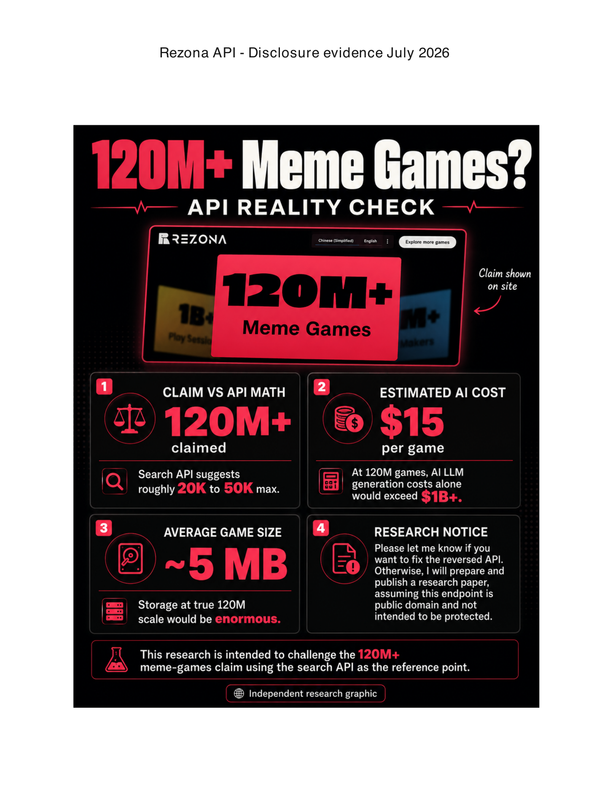

10,528
unique game/version records in the expanded enriched corpus.
A historical claim, made inspectable
Rezona says it has 120M+ games. Are they real? Here is a reproducible method for testing the observable evidence.
unique game/version records in the expanded enriched corpus.
ordered mechanic-to-game memberships across the catalog.
canonical mechanics with queries and result order retained as provenance.
The historical disclosure attributes this claim to Rezona. This repository does not independently verify it.
Yes, if the claimed games were completed and the scenario cost were $1 each. That is arithmetic, not audited spend.
Saved API result windows supply a reproducible lower bound—not a total.
Capped, title-derived, dependent searches cannot establish an inventory or data-lake count.
Could an archive make the scale question falsifiable without pretending to know more than the evidence supports?
The result is a mechanics-led corpus, not a global census. It preserves API order, query choices, selected IDs, detail objects, and the exact search position that introduced each record.
At collection time, observed search and detail responses yielded 10,528 deduplicated game/version records across a mechanics archive and a fixed-seed keyword-space pilot.
This is transparent evidence of a collection process—not proof of a platform-wide total, current pricing, or total compute spend.
Planning, implementation, debugging, and revision can span multiple reasoning requests. A benchmark cost is input tokens × input rate plus visible output and reasoning tokens × output rate.
These are dated public reference benchmarks, not evidence that Rezona used OpenAI, either model, or these token budgets. Image/video generation, caching, retries, and platform overhead are also unknown.
GPT-5.6 Terra: $2.50/M input · $15/M output.
GPT-5.6 Sol: $5/M input · $30/M output.
Near $1: Terra 10k input + 65k output/reasoning; Sol 10k + 31.7k.
Near $10: Terra 100k input + 650k output/reasoning; Sol 100k + 316.7k, aggregated across requests.
The archive directly records returned query windows. The 120M statement, costs, and overlap sensitivity are separate layers that must not be collapsed into a platform-wide conclusion.
distinct game IDs observed across combined saved raw-search windows: a lower bound, not a census.
literal terms at the API's 200-result ceiling, so their unseen result tails are unknown.
of observed IDs appeared in one term only, showing broad discovery rather than a total estimate.
32,238 mechanics-frame IDs plus a 60-query pilot that contributes 7,788 IDs beyond that original raw union.
40,026 + 31,947² / (2 × 4,363). It is not Rezona’s inventory, actual data lake, platform census, or a confidence interval: 318/350 terms were capped and title-derived queries are dependent.| Scenario | Games | $1/game | $10/game |
|---|---|---|---|
| Original curated corpus | 8,528 | $8,528 | $85,280 |
| Expanded enriched corpus | 10,528 | $10,528 | $105,280 |
| Combined observed lower bound | 40,026 | $40,026 | $400,260 |
| Exploratory overlap model | 156,988 | $156,988 | $1.57M |
| Historical 120M comparison (unverified) | 120,000,000 | $120M | $1.2B |
The $1/$10 values are scenario inputs per completed indexed game, not audited platform pricing or spend. They exclude failures, retries, hosting, moderation, storage, and other costs. Read the full claim, token-cost, and overlap methodology → · View the analysis JSON →
A game enters the dataset only with a visible route: mechanic → query → page → result position → selected rank → detail response. That route is what makes the collection useful to audit.
The workflow preserves configured query order and API item order, then records the selected mechanic, query, page, position, and rank beside each API detail object.
flowchart LR A[100 ordered mechanics] --> B[Saved search pages] B --> C[First 100 unique games per mechanic] C --> D[Deduplicated detail archive] D --> E[Enriched dataset] B --> F[index and provenance] F --> E
sequenceDiagram participant C as Collector participant A as API participant S as Local checkpoints participant V as Validator C->>A: Search pages, two concurrent jobs A-->>C: JSON responses C->>S: Save raw responses unchanged C->>A: Selected game details C->>V: Validate and aggregate V-->>C: Enriched dataset + manifest
The repository records confirmed live behavior, strong inferences, and open questions separately. The corpus depends only on search and game-detail responses; stateful routes are documented for research completeness and remain out of scope for collection.
topic/* — discovery and topic-scoped game listssearch?type=…&q=… — paged multi-type searchgame/detail and game/creation-templates — game metadata and presetsasset/page, comment/*, notification/* — documented supporting surfacesOptional authentication is for your own authorized Rezona account. The collector falls back to anonymous calls wherever an endpoint permits it and never prints a configured token.
api.rezona.ai/api/v3.REZONA_ACCESS_TOKEN=replace-with-your-own-tokenNever copy cookies, browser exports, headers, or token values into the repository, screenshots, journals, or generated JSON.
Read the disclosure PDF · Source-data notice and correction process

The MIT license applies to this project’s original code, writing, diagrams, and generated artwork. It does not grant rights in source game data, creator material, trademarks, or other third-party content. No credentials, cookies, authorization headers, or browser-session data are included.